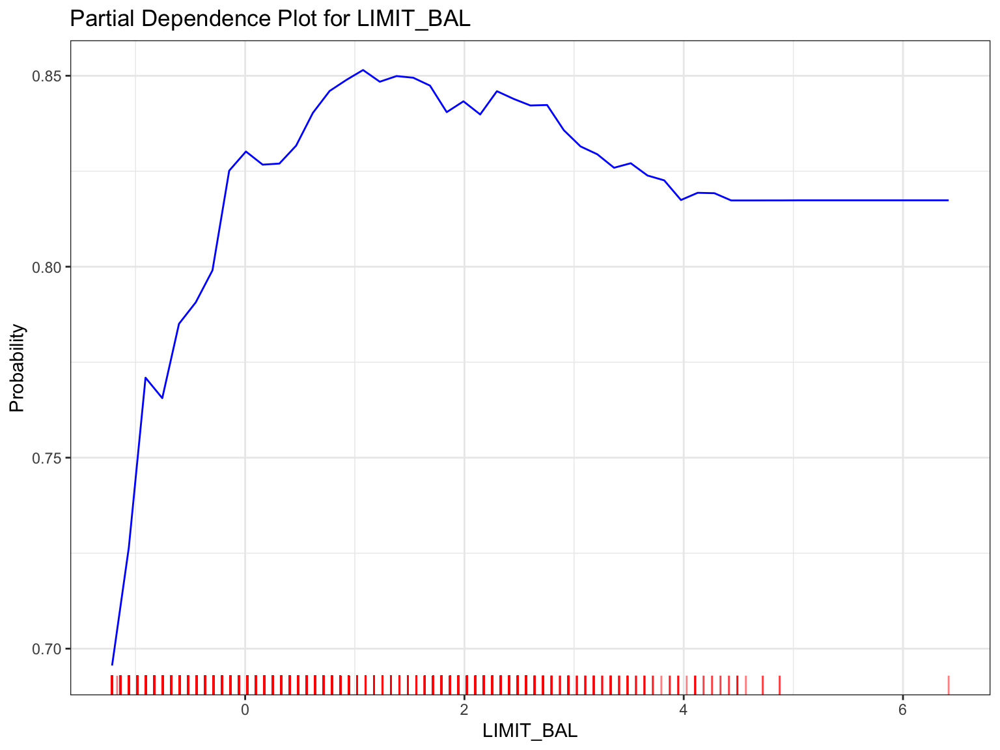

Chapter 5 Random Forest
5.1 Model Interpreation
Because the random forest is a black box model, we interpret it direactly by Shapley value and PDP.
5.1.1 Shapley Values
The Shapley value is the average contribution of a feature value to the prediction in different coalitions. The plot above shows the mean absolute SHAP values of the random forest model we built, which represent the each variable’s impact to prediction. The feature importance distribution is concurrent with logistic regression model’s but different with decision tree’s, which states that the most importance feature is PAY_1 and the second is LIMIT_BAL.
5.1.2 Partial Dependence Plots (PDP)
5.1.2.1 Partial Dependence Plots of variable PAY_1
The random forest model’s distribution of level contribution of PAY_1 are similar with the full decision tree model’s distribution of level contribution of PAY_1, which states that lower level of PAY_1 (Indicating less delaying) have stronger impact to the prediction while other variable remain as constant. This information suggests that clients who have a history of less delaying in their payments (lower PAY_1 level) are less likely to default on their credit card payments. Because of the similarity, the paradoxical phenomenon that the full random forest model’s distribution of level contribution of PAY_1 is completely opposite with the logistic regression model’s distribution of level contribution of PAY_1 also exists.
5.1.2.2 Partial Dependence Plots of variable LIMIT_BAL
 The PDP of Limit Balance shows that the relationship between the probability of default and Limit Balance is non-monotonic More specifically, the probability of default will initially increase, and then decrease, and finally remain stable when the limit balance increases. The assumption of this relationship between the probability of default and Limit Balance is all other variables remain constant.
5.2 Model Evaluation
## Accuracy: 0.7293333The plot above represents the Receiver Operating Characteristic (ROC) curves of the random forest model. The red line vertical to the X-axis represents the optimal threshold evaluated by the Youden index. Area Under the Curve (AUC), which measures the area under the Receiver Operating Characteristic (ROC) curve, is a metric used to evaluate the performance of a binary classification model. Given the AUC of model = 0.743 and the TPR at the optimal threshold, we can make a conclusion that the random forest model is good if we focus on accuracy and sensitivity. However, the random forest is a black box model, which means we cannot interpret it locally, but have to explain it using other models, such as Shapley values or partial dependence plots of variables. The lack of local interpretablilty is a representation of trade-off between interpretability and model performance.